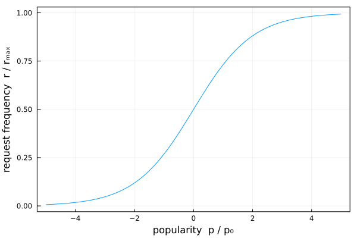

|
|

|
\[\tiny{
\text{wanted: map }\{r_n\}_{n\in\mathcal{N}}
}\]
\[\tiny{
r_{n}=\dfrac{r_\text{max}}{1+\exp(-\dfrac{p_n}{p_0})}
}\]
\[\tiny{
r_{n+1}=\dfrac{r_\text{max}}{1+\exp(-\dfrac{p_n+\Delta p}{p_0})}
}\]
\[\tiny{
\Delta p=\dfrac{1-I}{1+I}
}\]
\[\tiny{
I=\overbrace{\left(\dfrac{\Delta t}{\Delta t_0}\right)^{\epsilon_t}}^\text{time}\cdot
\overbrace{\left(\dfrac{\rho}{\rho_0}\right)^{\epsilon_\rho}}^\text{price}
}\]
\[\tiny{
I=\overbrace{\left(\dfrac{\Delta t}{\Delta t_0}\right)^{1-\gamma}}^\text{time}\cdot
\overbrace{\left(\dfrac{\rho}{\rho_0}\right)^{\gamma}}^\text{price}
}\]
\[\tiny{
I=\overbrace{\left(\dfrac{\Delta t}{\Delta t_0}\right)^{1-\gamma}}^\text{time}\cdot
\overbrace{\left(\dfrac{\rho+N\cdot\text{bus_cost}}{\rho_0}\right)^{\gamma}}^\text{price}
}\]
\[\begin{aligned}
r\,&\text{: request frequency}\\
p\,&\text{: popularity score }\\
\Delta p\,&\text{: popularity increase }\in[-1,1]\\
I\,&\text{: inconvenience }>0\\
\Delta t\,&\text{: delay time }>0\\
\rho\,&\text{: driven distance }>0\\
\end{aligned}\]
|